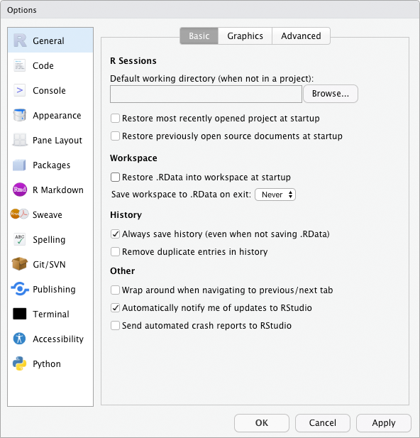
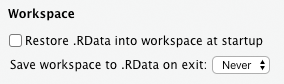
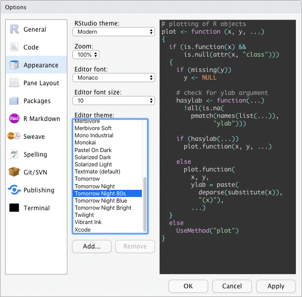

RStudio anpassen¶
Über das Menü Tools > Global Options können Sie RStudio Ihren Vorlieben entsprechend anpassen.
An dieser Stelle kann ich nicht auf alle Möglichkeiten eingehen (ich kenne auch gar nicht alle), aber ich möchte auf ein paar sinnvolle Anpassungen hinweisen:
Im Bereich General unter Workspace: Entfernen Sie bitte das Häckchen bei Restore .RData into workspace at startup und stellen Sie die Option Save workspace to .RData on exit auf Never. Diese Optionen sorgen dafür, dass die Arbeitsumgebung von R bei jedem Schließen gespeichert wird und beim neuen Öffnen wieder geladen wird. Das betrifft zum Beispiel alle Objekte, die Sie in einer R-Session erstellt haben. Er hört sich zwar erstmal nach einer tollen und zeitsparenden Idee an, die ganzen Objekte nicht erneut erstellen zu müssen und direkt an der Stelle weitermachen zu können, an der man aufgehört hat. In der Praxis ist das aber eine ganz furchtbare Idee! Zwischen zwei R-Sessions hat man sehr wahrscheinlich vergessen, wo genau man aufgehört hat, welche Transformationen mit einem R-Objekt bereits durchgeführt wurden und welche noch folgen sollen. Das kann in totalem Chaos enden. Es ist daher besser mit einem frischen, leeren Workspace zu starten und ggf. das Skript -. welches man natürlich abspeichern sollte – von oben nach unten erneut auszuführen.
Unter Appearance können Sie das Farbschema für das Syntaxhighlighting anpassen. Sie können zwischen sehr vielen unterschiedlichen Varianten wählen. Einige davon haben einen dunklen Hintergrund. So ein Dark Mode hilft beim Energiesparen und ist vielleicht auch angenehmer für die Augen. Probieren Sie es ruhig aus! 
Ich habe über Code > Display > General > Show margin noch eine senkrechte Linie bei 80-Zeichen eingeblendet. Sie erinnert mich daran, nicht zu lange Codezeilen zu produzieren und lieber den Code an sinnvollen stellen zu umbrechen oder ihn ggf. umzuschreiben. Das dient der Übersichtlichkeit.